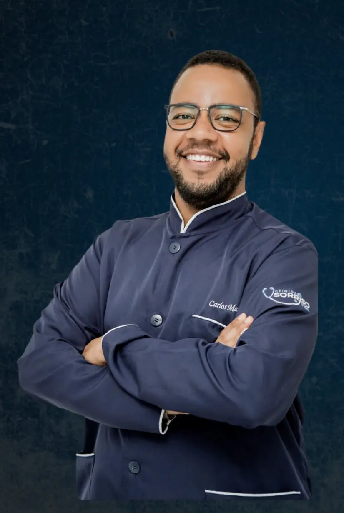
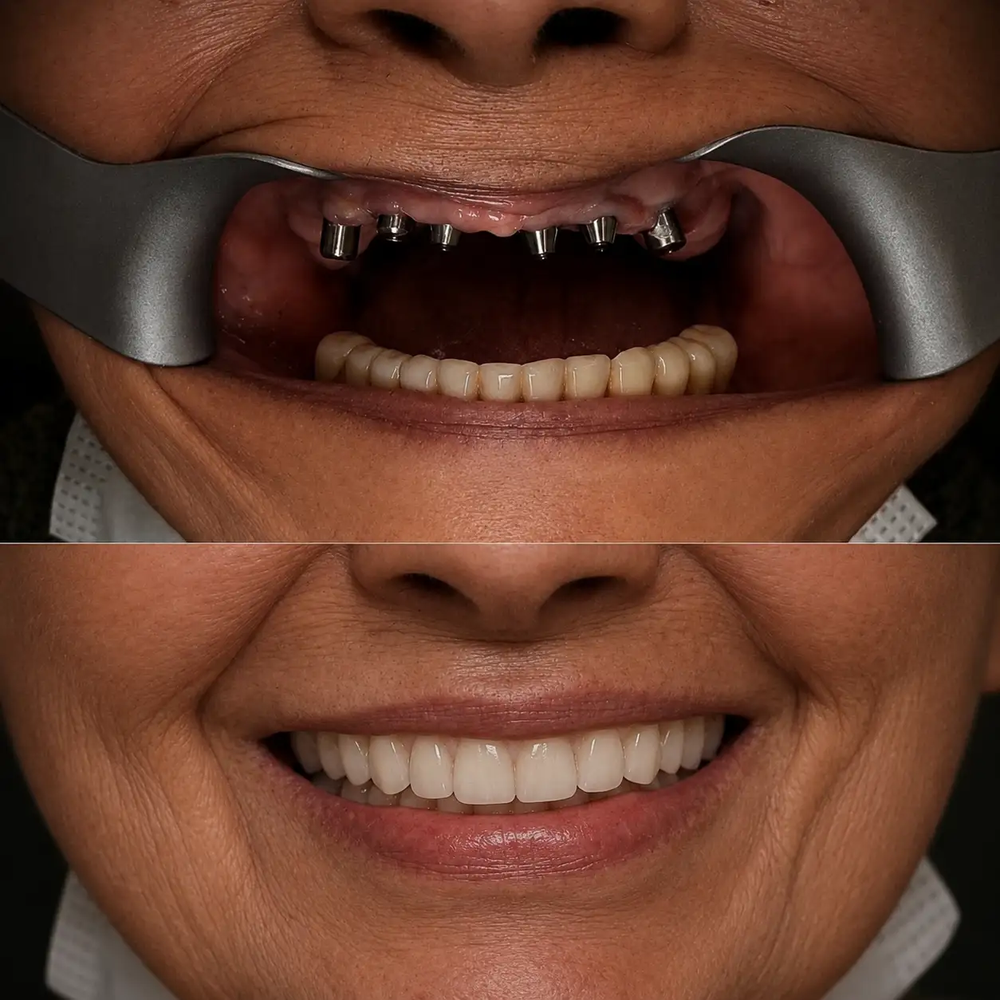
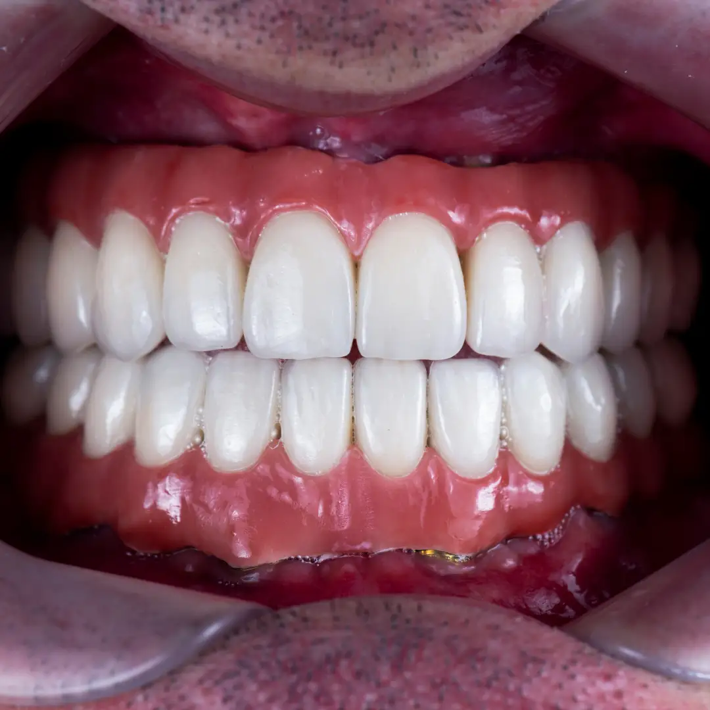
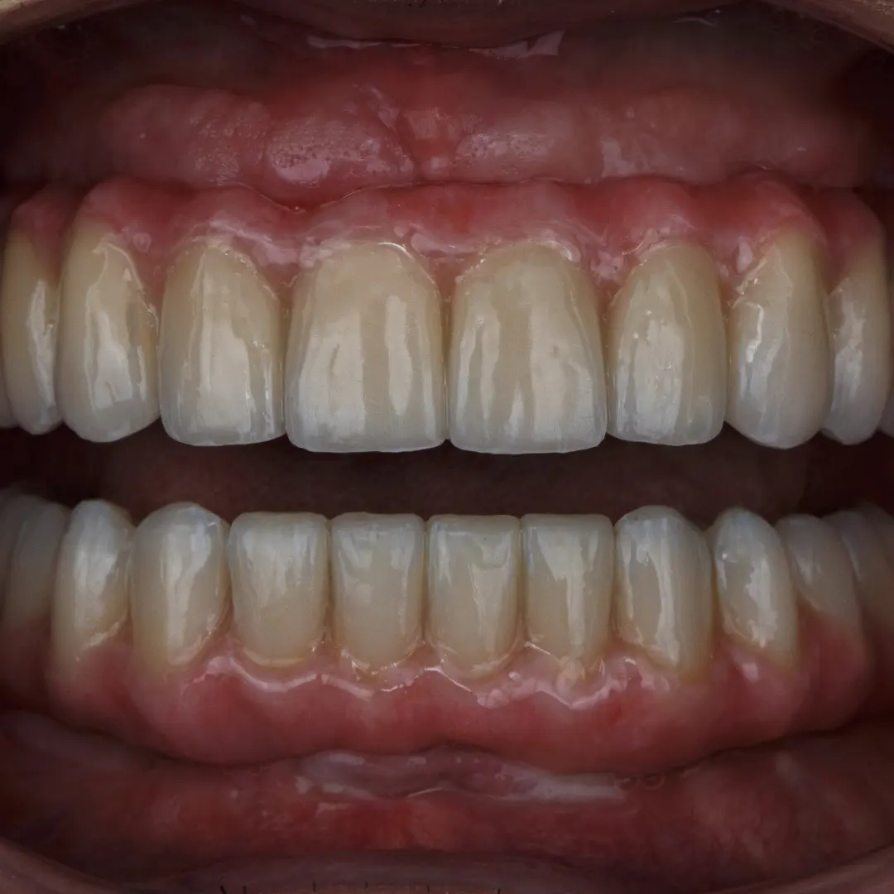
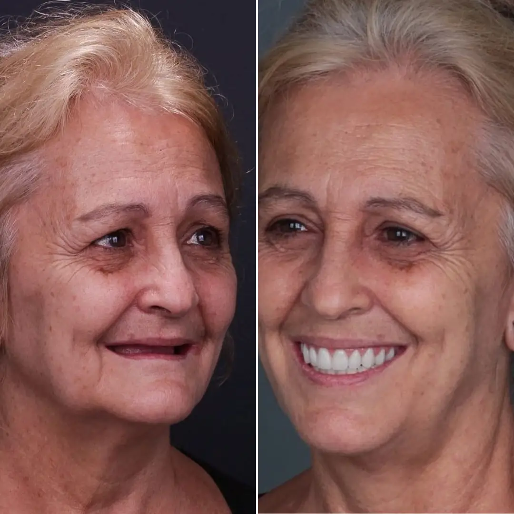
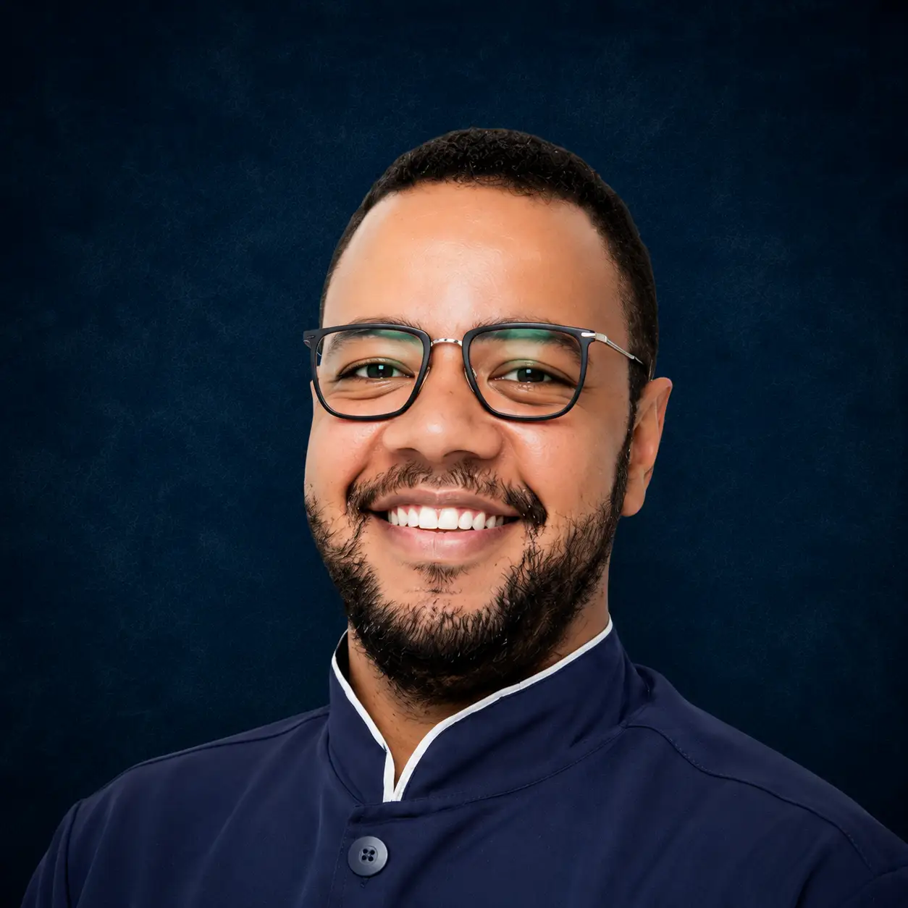

Não sai da boca: só o dentista remove para manutenção.
Prótese protocolo em Fortaleza
Prótese Protocolo: dentes fixos sobre implantes
Diga adeus à dentadura solta. Volte a sorrir e mastigar com segurança.
Protocolo
Prótese protocolo a partir de
R$ 7.900,00*
ou em 10x de R$ 790,00 ou no boleto
*Sujeito à avaliação clínica.

Dr. Carlos Martins
✓
Cirurgião Dentista · CRO-CE 10625
Implantes • Reabilitação Oral
★★★★★
4,9 no Google
Avaliações reais de pacientes
Caso real
Prótese protocolo finalizada pelo Dr. Carlos Martins.
Veja um tratamento real e entenda como o planejamento e o cuidado em cada etapa fazem diferença no resultado final.
▶ Ver casos de prótese protocoloCaso realDr. Carlos
Martins
Entenda o tratamento
O que é a prótese protocolo?
A prótese protocolo é uma prótese fixa, com todos os dentes de uma arcada, que fica parafusada sobre implantes dentários. Ela pode ser feita na arcada superior, na inferior ou nas duas.
Diferente da dentadura comum, ela não é removida pelo paciente no dia a dia: só o dentista retira a prótese, quando necessário, para manutenção. A quantidade de implantes e o tipo de prótese são definidos na avaliação.
Prótese fixa sobre implantes
Arcada superior, inferior ou as duas
Planejamento individual para cada caso
Avalie seu caso
Para quem é a prótese protocolo?
Pode ser uma opção para quem perdeu muitos dentes ou não se adaptou à dentadura. A indicação é confirmada na avaliação.
Usa dentadura
Perdeu vários dentes
Tem prótese que machuca
Tem prótese que fica solta ou sai do lugar
Tem dificuldade para mastigar com a prótese
Depende de cola para segurar a dentadura
Se você se identificou com alguma dessas situações, nossa equipe pode avaliar seu caso.
Agendar avaliação pelo WhatsApp
Como funciona
Do primeiro contato à prótese fixa
01Avaliação
Exame clínico e, quando necessário, exames de imagem para entender o seu caso.
02Planejamento
Definimos a quantidade de implantes, o tipo de prótese, os prazos e o valor do seu caso.
03Implantes
Instalação dos implantes conforme o planejamento, com anestesia local.
04Prótese fixa
A prótese é parafusada sobre os implantes, com orientação de higiene e manutenção.
Vantagens
Por que a prótese protocolo
Uma alternativa fixa para quem quer deixar a dentadura solta para trás.
Agendar avaliaçãoMais firmeza para mastigar no dia a dia.
Mais segurança para falar e sorrir.
Dispensa a cola de dentadura.
Casos reais
Quero avaliar meu caso
Galeria de prótese protocolo.
Casos reais de prótese protocolo e reabilitação sobre implantes. Cada resultado depende do planejamento e das condições de cada paciente.

Antes / depoisProtocolo superiorVer caso completo →

Caso realSuperior e inferiorVer caso completo →

Caso realDuas arcadas reabilitadasVer caso completo →

Antes / depoisReabilitação completaVer caso completo →
Condição de pagamento
Prótese protocolo com pagamento facilitado
Agende sua avaliação com a equipe Dentalli e conheça o planejamento indicado para o seu caso.
Prótese protocolo
Prótese protocolo a partir de
R$ 7.900,00
ou em 10x de R$ 790,00
ou no boleto
Quero agendar minha avaliação
*Valor sujeito à avaliação clínica. O planejamento pode variar conforme a necessidade de cada paciente.
Dúvidas frequentes
Perguntas sobre prótese protocolo
Dói?
Os procedimentos são feitos com anestesia local e a equipe orienta todos os cuidados do pós-operatório. A sensação varia de pessoa para pessoa e o dentista explica cada etapa na avaliação.
Quanto tempo leva?
Depende do caso. O prazo de cada etapa, dos implantes à instalação da prótese, é definido no planejamento feito após a avaliação.
Quanto dura?
A durabilidade depende de cada caso, da higiene em casa e das consultas de manutenção. Na avaliação, a equipe explica os cuidados necessários.
Superior e inferior têm o mesmo valor?
O valor é definido no planejamento de cada caso, após a avaliação.
Posso parcelar?
Sim. A prótese protocolo é a partir de R$ 7.900,00 ou em 10x de R$ 790,00. O valor final do seu caso é definido na avaliação.
Aceita boleto?
Sim, é possível pagar no boleto. As condições são apresentadas na avaliação.
Quem somos
Dentalli Presidente Kennedy
Atendimento com o Dr. Carlos Martins e equipe, na Av. Dr. Theberge, no Presidente Kennedy, em Fortaleza.
Esta unidade · Plantão 24h
Dentalli Presidente Kennedy
Av. Dr. Theberge, 2111 - Presidente Kennedy, Fortaleza - CE, 60335-480
Plantão 24h, todos os dias · (85) 99260-4260

Dr. Carlos Martins
Cirurgião Dentista · CRO-CE 10625
Implantes • Reabilitação Oral
Converse com a Dentalli
Volte a sorrir e mastigar com mais segurança.
Prótese protocolo a partir de R$ 7.900,00 ou em 10x de R$ 790,00 ou no boleto. Fale com a nossa equipe e agende sua avaliação.
Quero agendar minha avaliação Falar com a equipe